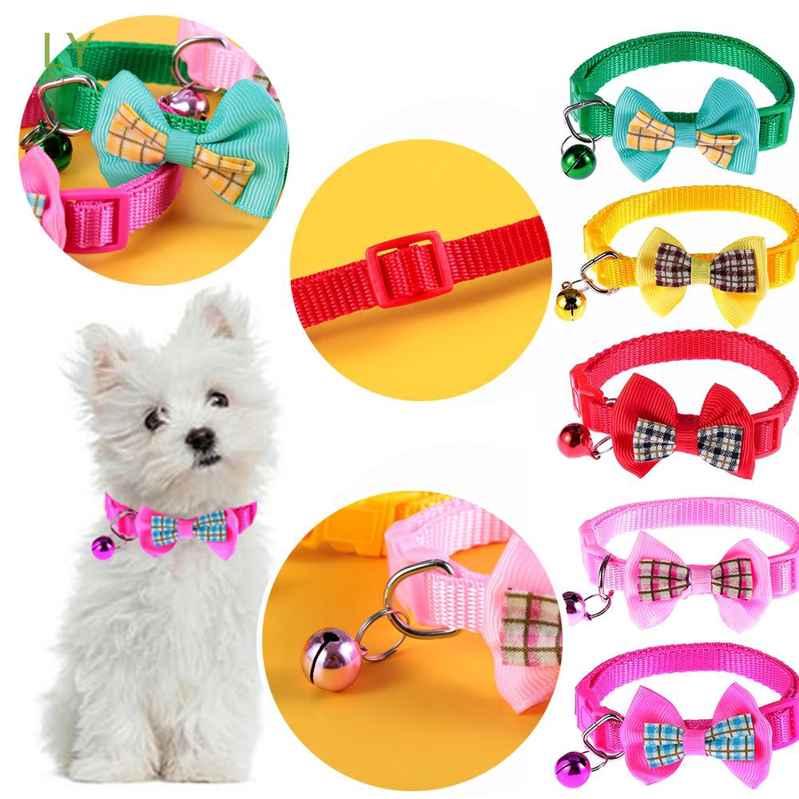
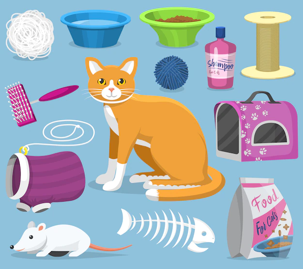

Clinica Veterinaria Doctor Mascota
PERROS
Lo primero que debes saber es que tu mascota tendrá necesidades básicas que debes cubrir, como alimentación, comodidades, cama, casas,collares, juguetes, ropa, etc. Esto servirá para su higiene y también su seguridad
GATOS
Estos accesorios son herramientas que nos permitirá para que la convivencia con nuestros engreídos sea más fácil y satisfactorio
